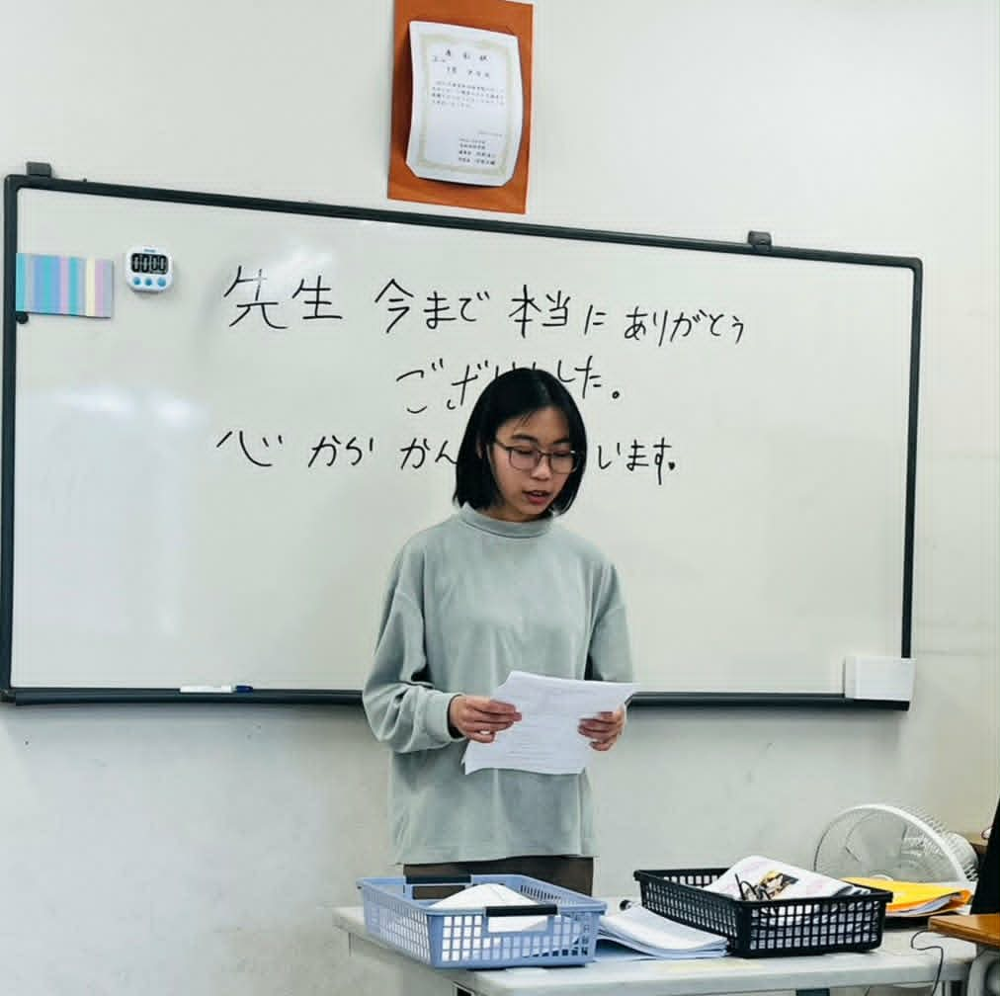
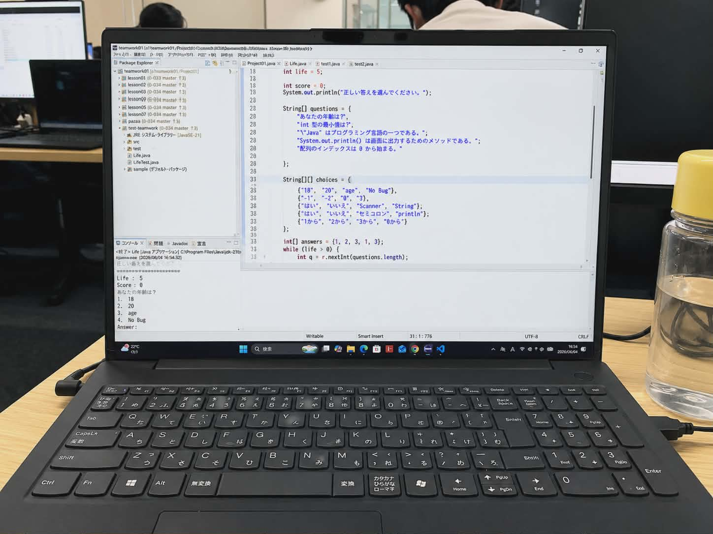
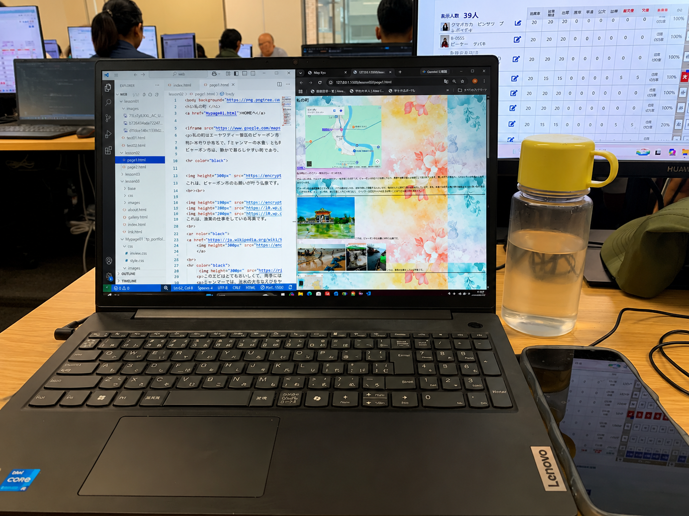
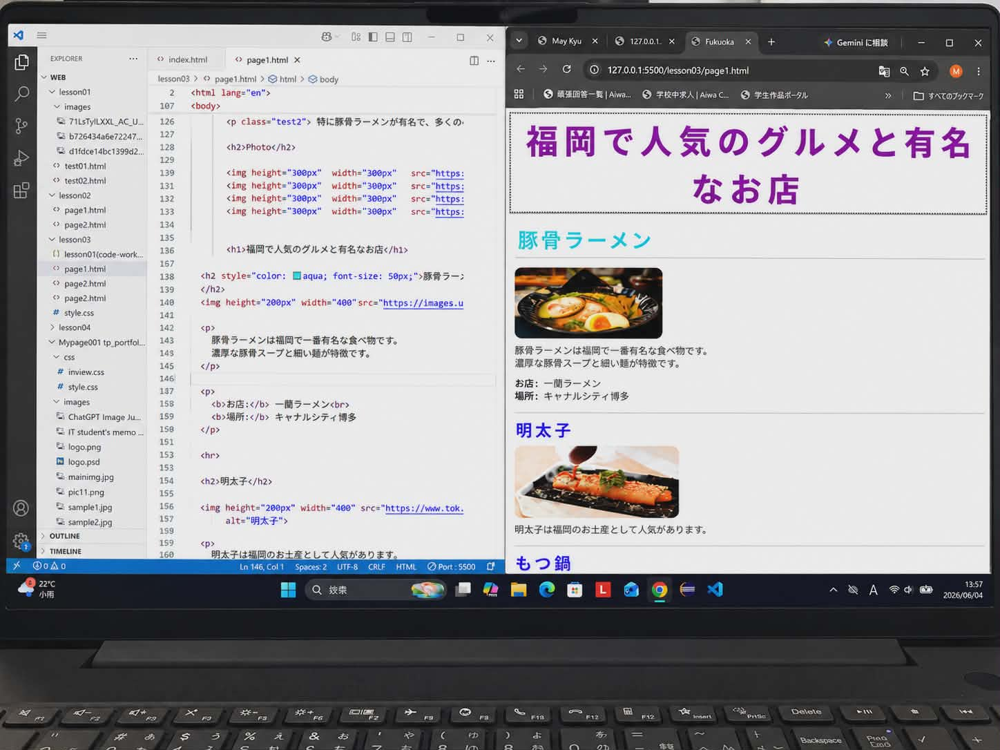

日本語学校での活動
学校のさまざまな活動やイベントに積極的に参加しました。 この写真は、漢字書道のイベントに参加したときのものです。


MY PORTFOLIO
はじめまして。メイチュシェインと申します。
現在、日本のIT専門学校でプログラミングを勉強しています。
授業ではJava、HTML、CSS、SQLなどを学んでいます。 Javaではオブジェクト指向プログラミングについても勉強し、 チームでゲームを作るプロジェクトにも取り組みました。
分からないことがあったときは、オンライン動画や参考書を使って復習し、 先生やクラスメートに質問しながら理解を深めています。
将来はITエンジニアとして働き、さまざまな技術や経験を身につけたいです。 その目標に向かって、これからも努力を続けていきます。
制作した作品を見る
ABOUT ME
私のことや、将来の目標を紹介します。
私は、分からないことがあってもすぐに諦めず、 自分で調べたり、周りの人に質問したりして、 少しずつ理解することを大切にしています。
これからも日本語とITの勉強を続け、 チームで協力しながら、役に立つシステムを作れるエンジニアを目指します。
| 出身 | ミャンマー |
|---|---|
| 現在 | 日本のIT専門学校で勉強しています。 |
| 学習している技術 | Java、OOP、HTML、CSS、SQL、JDBC、SQLite |
| 趣味 | 読書、水泳、プログラミング |
| 将来の夢 | 会社で経験を積み、さまざまな技術を身につけて、 自分でシステムを開発できるITエンジニアになることです。 |
MY EXPERIENCE
学校の活動を通して、新しい経験に挑戦してきました。
学校のさまざまな活動やイベントに積極的に参加しました。 この写真は、漢字書道のイベントに参加したときのものです。
小学生と交流する活動にも参加しました。 人と関わる経験を通して、コミュニケーションの大切さを学びました。

私は人前で話すことが少し苦手ですが、 自分を成長させるために、学校の発表にも積極的に参加しました。 何度も練習したことで、落ち着いて発表できるようになりました。

友達と協力して、小さなゲームプロジェクトを作りました。 これまでに学んだJavaなどの知識を使い、 学習内容を確認できるゲームにしました。

ステージの上でスピーチをするときは少し緊張しましたが、 授業で何度も練習していたので、落ち着いて発表することができました。
MY PROJECTS
授業やチーム活動で作った作品を紹介します。

自分の町を紹介するために作成したWebページです。 文字や画像を使って、町の情報を分かりやすく伝えることを意識しました。

現在住んでいる福岡市を紹介するために作成したプロジェクトです。 写真や説明を使い、町の魅力を伝えるページを作りました。
友達と協力して作った小さなゲームです。 学んだ知識を実際に使いながら、 プログラムの動きやチームで開発することを学びました。
SELF PR
私の強みは、一度決めた目標に向かって努力を続けられることです。
私は2020年にミャンマーの高校を卒業しました。 その年は新型コロナウイルスの影響で大学が休校となり、 進学することができませんでした。 また、2021年からは政治情勢の影響で、勉強を続けることが難しくなりました。
その後、先生に相談したことがきっかけで、日本への留学を目指すようになりました。 2023年5月から日本語の勉強を始め、毎日学習を続けました。 その結果、約1年でJLPT N3に合格しました。
最初の留学面接では、うまく自分の考えを伝えられず、不合格になりました。 しかし、一度の失敗で諦めず、日本語の勉強と面接の準備を続けました。 その結果、2回目の面接で福岡愛和外語学院に合格することができました。
現在は日本で生活しながら、Javaなどのプログラミングを勉強しています。 これからも分からないことをそのままにせず、 自分で調べたり、周りの人に質問したりして、 知識と経験を増やしていきたいです。
CONTACT
こちらからSNSをご覧いただけます。